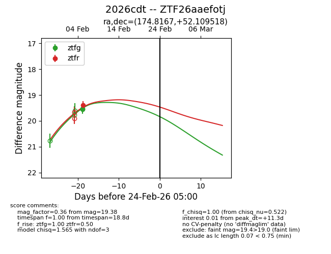
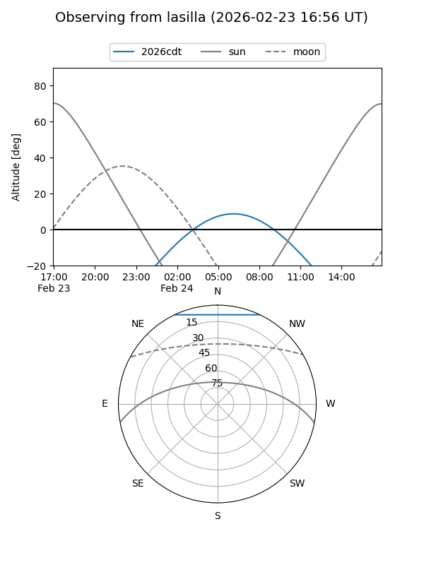
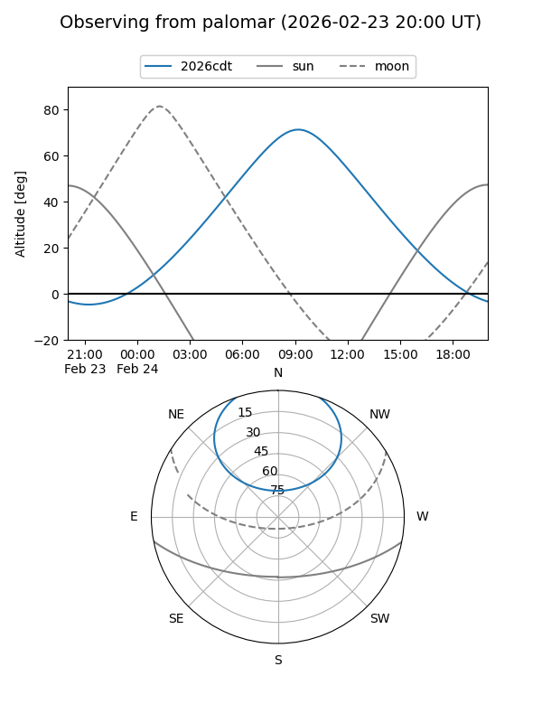

2026cdt
Target 2026cdt at 2026-02-24 09:08
Aliases and brokers:
FINK: link
Lasair: link
ALeRCE: link
TNS: link
YSE: link
alt names
ZTF26aaefotj (ztf,fink_ztf)
2026cdt (tns,yse)
Coordinates:
equatorial (ra, dec) = 174.8167,+52.10952
equatorial (HMS+DMS) = 11:39:16.02,+52:06:34.26
galactic (l, b) = (146.4983,+61.59027)
Flags:
Photometry:
last ztfg=19.53, ztfr=19.38
2 ztfg, 1 ztfr detections
Lightcurve

Visibility


Additional plots